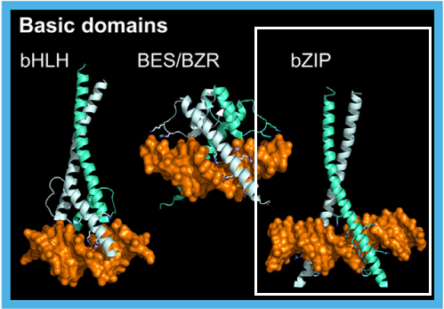

This superclass encompasses transcription factors (TFs) that bind DNA using a basic alpha-helix, typically inserted into the DNA major groove. It includes two widely conserved classes found in most eukaryotes:
Both bZIP and bHLH TFs function as dimers, pinching DNA between their two basic helices.
